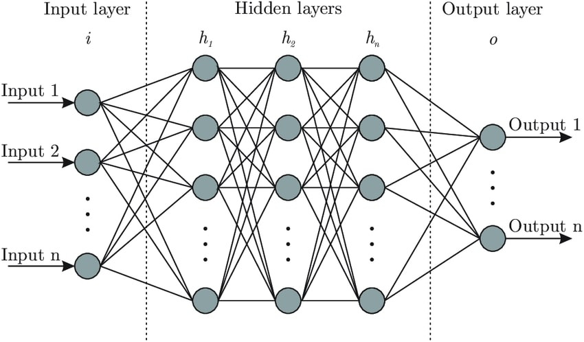
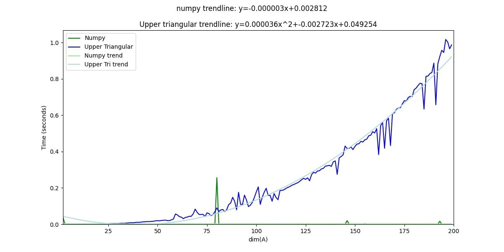
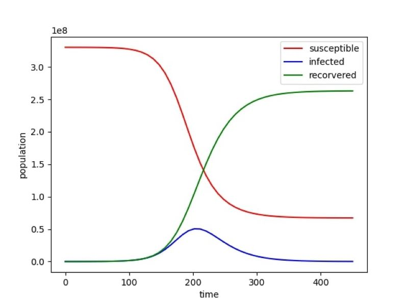
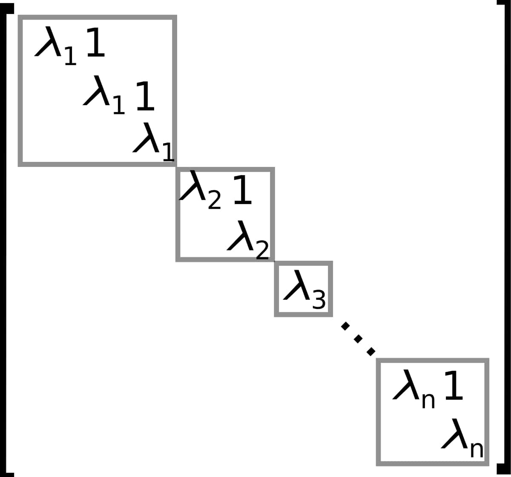

Spring 2022
For this project, I researched and presented my findings in any topic in mathematics. I chose to research and present a proof on neural networks and their ability to universally approximate any bounded, continuous function. The proof uses ideas from measure theory and functional analysis.


For this project, I compare different algorithms to compute the determinant of a matrix, as well as create graphs to visualise how increasing the dimension of a matrix affects the time to compute the determinant.

This project uses the Scipy package in Python to model the spread of COVID-19 using the SRI model, a system of ordinary differential equations used to model given initial conditions, and then use matplotlib to visualize the spread.
This project is a Python program that is used to send daily, automated encrypted emails. After sending the emails, it verifies that the email was sent properly, and if an error is detected in sending the email, an alert is sent by email to notify the sender that an error has occured.

Here I computed the Jordan Canonical Form of a 5x5 matrix in Maple by finding a basis for the generalized eigenspace corresponding to each eigenvalue consisting of cycles of generalized eigenvectors, and using those bases as the matrix B such that (B^-1)AB=J.
This project was creating a database for a hypothetical car rental company, and then writing a few simple SQL queries.